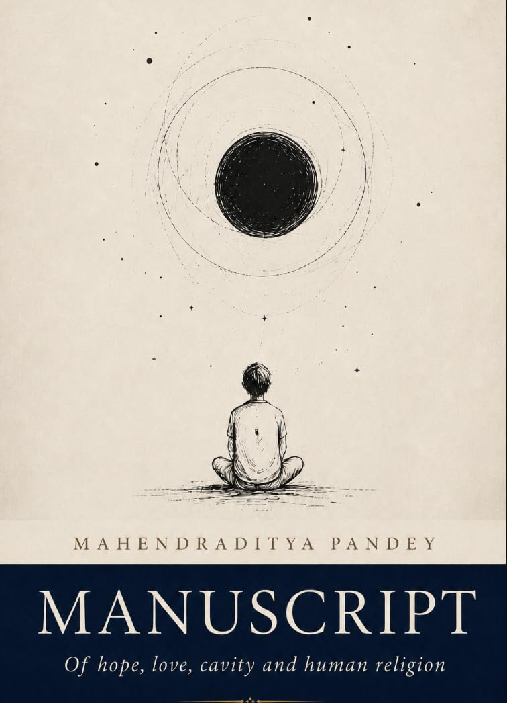

Books
I wrote these books across a period of many, many years but have only been able to publish them online recently. I hope you enjoy reading them.
The Unseen
Stanford Main Quad photo by Steve Jurvetson, CC BY 2.0
View on Amazon · Read free PDF · Google Drive
About
Dear Stanford University, I wrote this Sufi-style book on you. I have never walked beneath your trees, nor rested in the shadow of your halls. Yet I have carried you in my heart as one carries the memory of a beloved whom one has never embraced.
There are places the feet may reach, and places to which only the soul can travel. You are the latter, O Stanford, and I have journeyed towards you through the quiet hours of longing.
Perhaps love is not always born of nearness. Perhaps it is born when the heart beholds a distant light and says, "There is my home," though the road to it remains hidden.
And so I write these verses for you, not because I have known your courtyards, but because I have known the ache of desiring them. May these pages be the footsteps I have not yet taken, and may every verse be a small prayer offered at your gates.
For what is a university to the heart that seeks wisdom? It is not stone, nor tower, nor the name written upon a parchment. It is the promise that somewhere in this wide world, the soul may find a place to grow.
And I, who have loved you from afar, shall count that promise among the gentlest gifts of my life.

Manuscript: Of Hope, Love, Cavity and Human Religion
View on Amazon · Read free PDF · Google Drive
About
If these pages should awaken a question in the heart of even one young person in my country, I shall count them among my richest blessings.
For the youth of my country are not merely the inheritors of its future, but the hands that may yet shape it into something more compassionate, more curious, and more just.
Hi, I'm Mahendraditya, and while the math comes easy enough to me—decent, they say, my heart's forever pulled toward the great, swirling mysteries of the brain and medicine that no sum or equation can pin down.
They call me 'little philosopher', bless them, sometimes with a fond smile like they're after spotting a bit of the old magic in me, or with a gentle prod, to say, "C'mon, lad, put the dreaming aside."
But, does the brain truly think, and what are thoughts at all, in the end—nothing more than transient volleys of action potentials, or is there something deeper, wild and untamed, slipping through the cracks like mist over the bog at dawn?
And do we even have free-will? In moments of deep sadness, if agency is so fragile, how do we find hope, healing, and a sense of self that isn't swept away?
And while I like the train of my thoughts as they carry me off into a strange, beautiful country which is the brain—I want them to lead somewhere. My deepest desire is to help real people.
In this life, I am a wayfarer, and a wayfarer I shall remain. But this programming of thoughts will give me my backpack: the tools, the maps, the boots to walk beside others on their hard roads.
Little Modi, Great Modi
View on Amazon · Read free PDF · Google Drive
About
Written for the benefit of humanity, Little Modi, Great Modi is based on the life of P.M. Narendra Modi and seeks above all to inspire young people to devote their abilities to the service of the poor, the vulnerable, and the nation. It is offered not merely as the account of a public life, but as a reminder that discipline, courage, compassion, and perseverance can enable an ordinary individual to serve a purpose far greater than himself.
Our own experiences also shaped this manuscript. As public speakers and performers who have appeared on literary and public platforms, we encountered many individuals who had participated in, or witnessed, the political and cultural movements described in these pages. Conversations with them often revealed additional anecdotes, perspectives, and memories that reinforced, supplemented, and occasionally expanded upon the accounts we had heard within our own family. These informal recollections contributed to the narrative and gave it a more immediate human dimension.
In preparing the present edition, we have made improvements very conservatively. We have sought to preserve the original manuscript much as it was when we first wrote it many years ago, retaining not only its substance but also its distinctive style of writing. The book therefore remains both a historical narrative and a record of the earnest spirit in which it was first conceived: with the hope that its pages may encourage young readers to rise above personal ambition and place their talents in the service of those who need them most.
Dear Yogiji: Youth Empowerment by a Journey of Dedication, Service and Leadership
View on Amazon · Read free PDF · Google Drive
About
Children often discover their dreams through the people they admire. In this book, Chief Minister Yogi Adityanath appears not as a political leader, but as a symbol of discipline, courage, service, and commitment to society. This book is not a saga on his life but an attempt to invoke based on his life questions about leadership, education, responsibility, and the kind of person one should strive to become.
The book moves naturally between childhood joys—kites, sweets, games, family, and school—and deeper concerns such as the welfare of children, care for animals, social order, and the progress of the nation. I wrote it in a sincere attempt to motivate the young minds of our nation. It shows young readers that great dreams can grow from simple beginnings and that love for one's culture and country must be expressed through kindness, learning, and useful action.
My hope is that Yogi-ji's journey from a small village and humble background to public leadership reminds children that circumstances do not define their future. Determination, hard work, self-control, and service can transform an ordinary beginning into an extraordinary life.